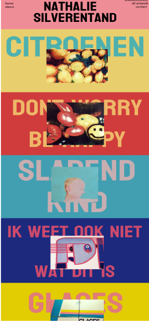
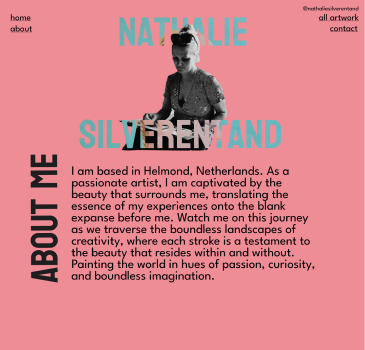
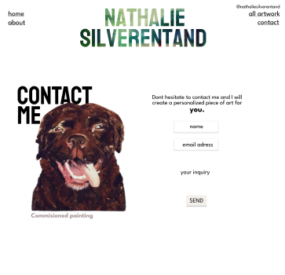
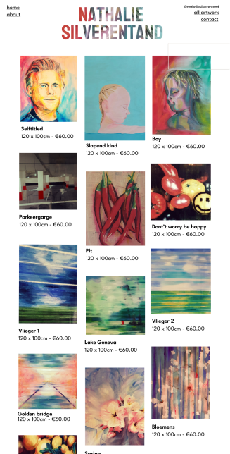

What I did
After meeting Nathalie and learning about her, our group researched and created mood boards to capture our impressions of her work and decide how to display it. She uses bright colors and paints what she sees, blending realism with abstract elements, often incorporating vertical and horizontal lines. Despite this, she mentioned a preference for a minimalist look.

My minimalistic design
How I did it
After doing research, the group leader suggested we all create minimalist designs to understand each other's vision and potentially incorporate each other's ideas. I researched painters' websites and found that many have simple designs that let the art speak for itself. My design was inspired by the American painter Mark Maggiori's website.
I asked for feedback, and the teachers said it was very simple and safe. However, I decided to continue with it.
FINAL DESIGN / PRESENTATION DAY
For our final design, we took a different approach, a bit risky some might say. We added colors, big texts, and animations to give it a modern feel. We were all confident in the end, so we decided to surprise our client Nathalie with the design during the presentation. She loved it so much that she chose us as the winning group for the best design. It just goes to show, taking risks can pay off sometimes.

Mark Maggori (painter website inspiration)


